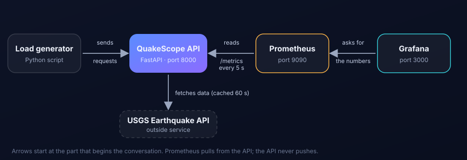

Watch an API breathe, in real time.
QuakeScope serves earthquake data from the USGS Earthquake API and measures itself while it runs. Prometheus collects the numbers and Grafana turns them into a live dashboard.
What we measure
The earthquake data is only the example. The project is about three numbers every team watches.
Request rateHow many requests the API receives every second.
LatencyHow long those requests take, shown as p50, p95 and p99.
Error rateThe share of requests that fail with a server error.
How it fits together

- The load generator sends normal requests to the API, about five per second.
- The API answers them, asking USGS for data when needed and reusing answers for 60 seconds. It counts and times every request.
- The metrics page. The API publishes those counts as plain text at
/metrics. - Prometheus reads
/metricsevery 5 seconds and stores each number with the time. - Grafana asks Prometheus for the numbers and draws the dashboard. The Live graphs page draws the same data.
The parts
Load generator
Sends steady traffic to our own API so the graphs are never empty.
no addressThis website
Overview and live graphs, served by nginx.
localhost:8081Run it
One command starts all five parts.
docker compose up -d --buildWait about a minute, then open Live graphs. Stop everything with docker compose down.